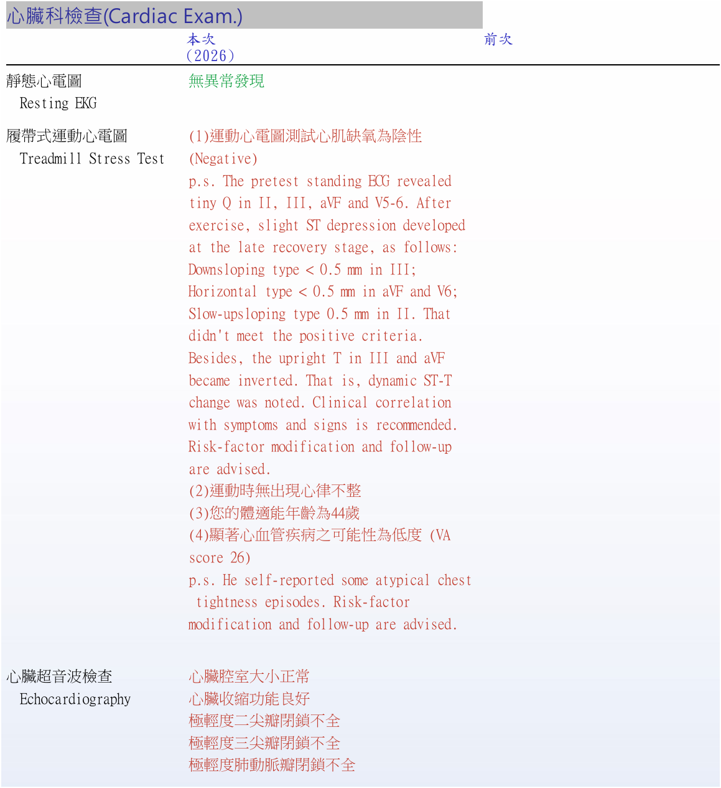
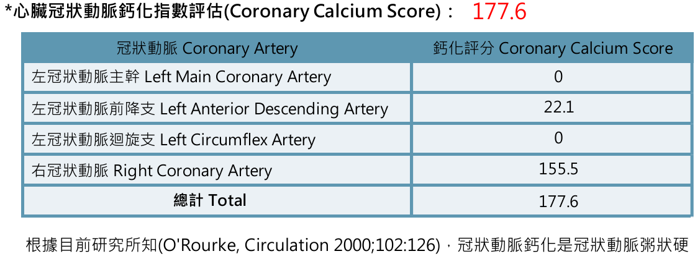
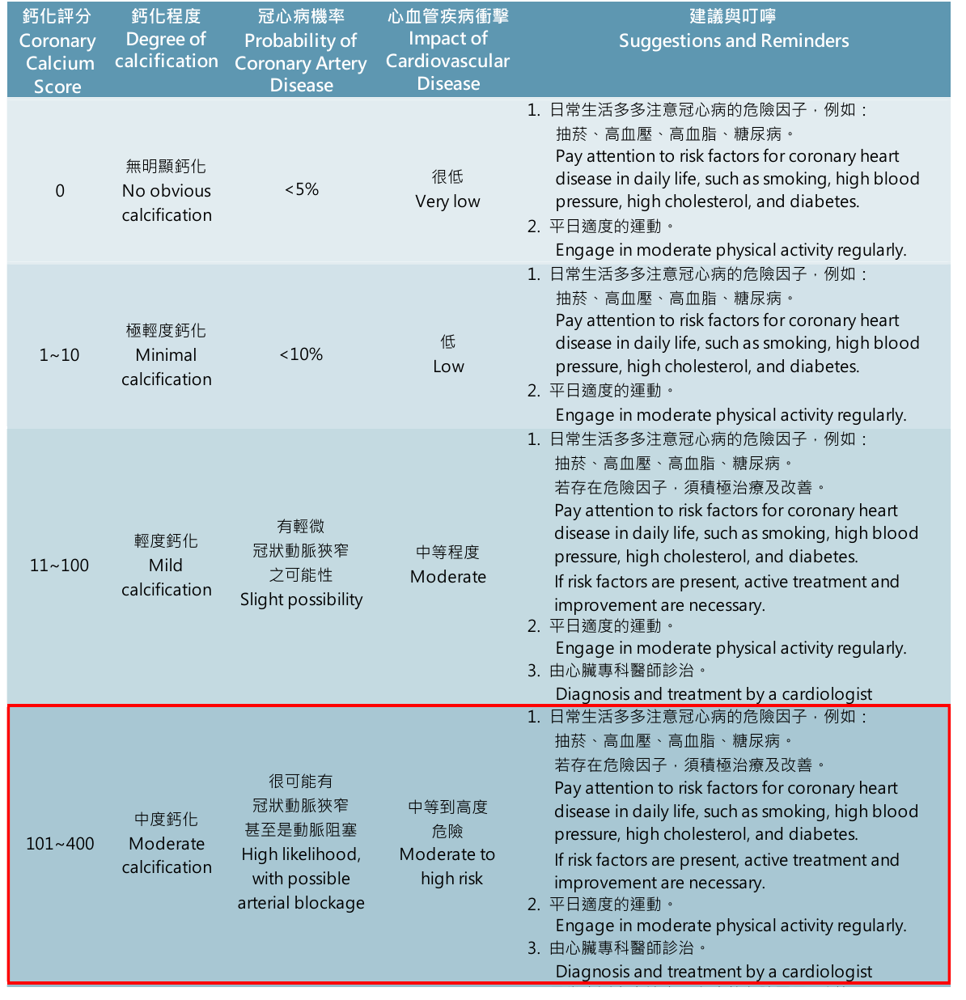
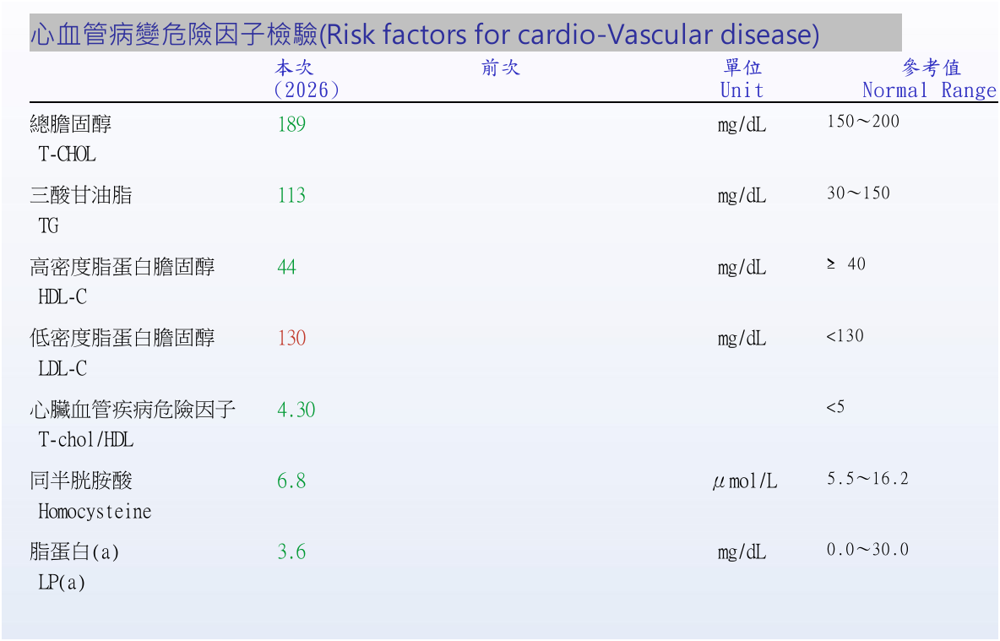
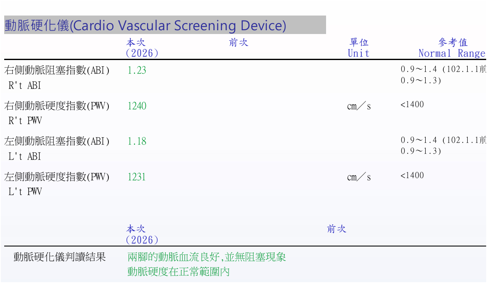
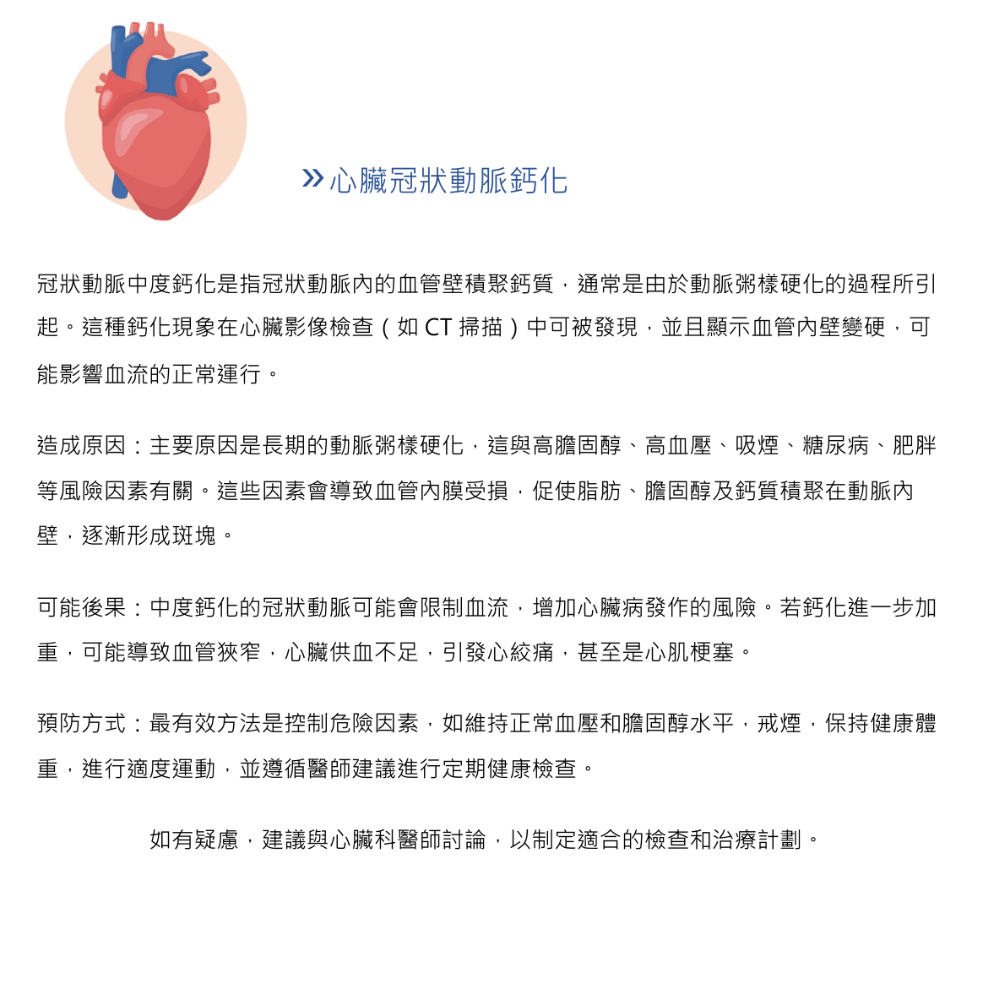
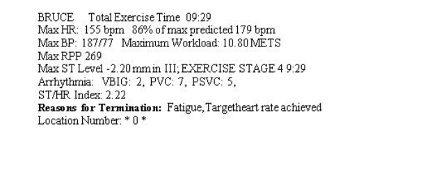
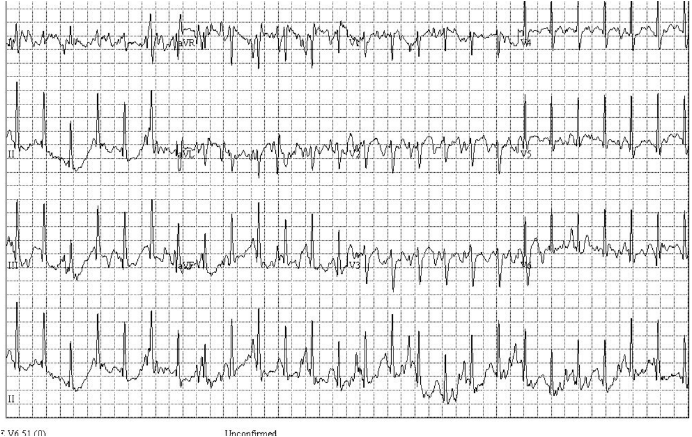
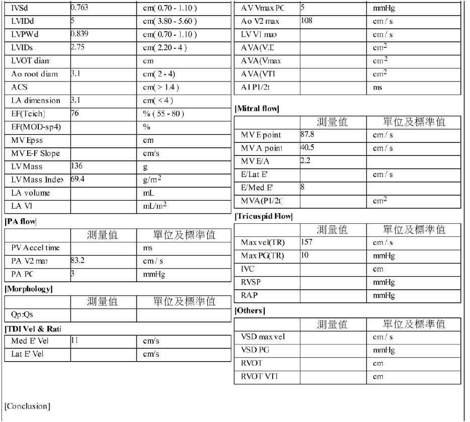
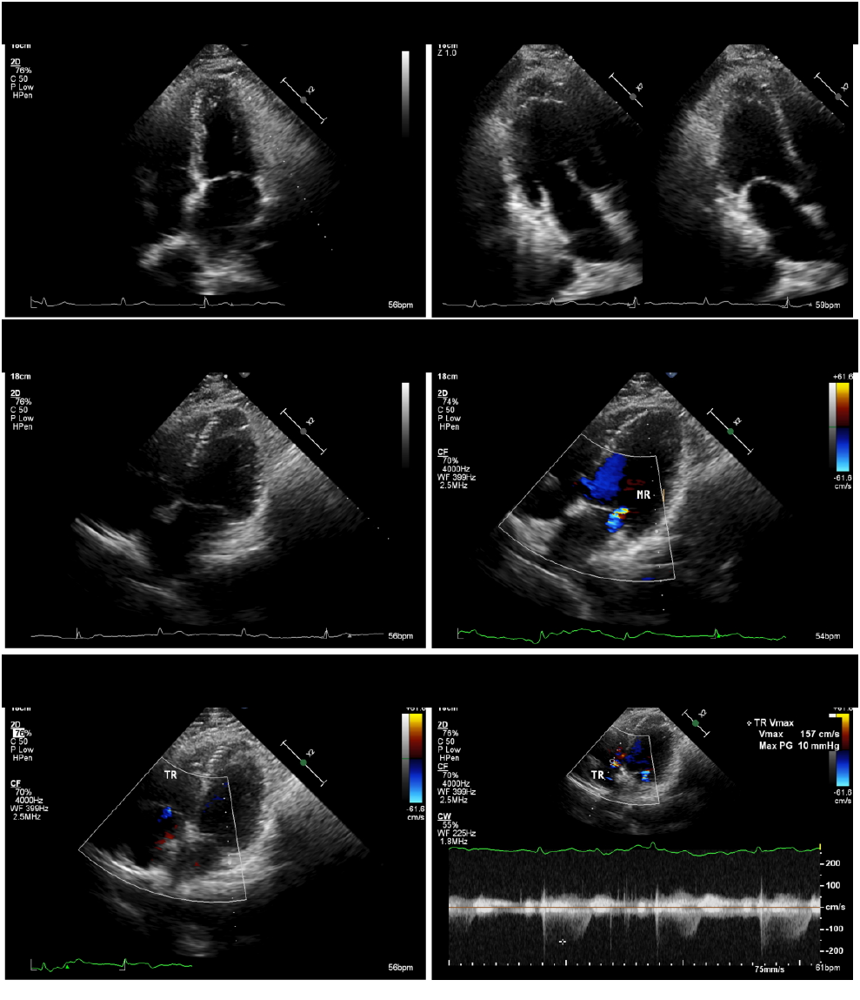

需請醫師優先評估
- 冠狀動脈鈣化：總分 177.6，右冠狀動脈 155.5、左前降支 22.1；報告分類為中度鈣化。
- 血脂控制：LDL-C 130 mg/dL，報告建議積極控制血脂，尤其降低 LDL。
- 頸部血管變化：右側鎖骨下動脈中小型硬化斑塊，右側總頸動脈球部血管壁肥厚。
- 症狀背景：報告記載有胸悶、心悸；若仍不適，建議至心臟內科追蹤。
| 檢查 | 結果 | 給醫師的重點 |
|---|---|---|
| 運動心電圖 | 心肌缺氧陰性，VA score 26 | 低度可能性 有動態 ST-T 變化描述，建議臨床相關性評估。 |
| 心臟超音波 | 收縮功能良好，極輕度瓣膜閉鎖不全 | 報告建議每 3 年追蹤心臟超音波。 |
| 十年 CHD 風險 | 4%，低度風險 | 低風險不等於無風險，需合併鈣化與血脂判讀。 |
| ABI / PWV | R ABI 1.23、L ABI 1.18；PWV 1240/1231 | 下肢血流無阻塞，動脈硬度正常範圍。 |
建議與追蹤方向
- 請心臟內科評估冠狀動脈鈣化中度風險是否需要進一步檢查、藥物調整或更密集追蹤。
- 報告建議控制血脂，尤其 LDL-C；也建議控制血壓、體重與腰圍。
- 若有胸悶、胸痛、喘不過氣或心悸持續，應依報告建議回心臟內科門診。
- 建議每年追蹤運動心電圖、每 3 年追蹤心臟超音波、每 2 年追蹤頸動脈超音波。
圖檔 PDF 補充：心臟科報告重點
運動心電圖圖檔報告
- Bruce protocol，總運動時間 09:29。
- 最大心率 155 bpm，約為預測最大心率 179 bpm 的 86%。
- 最大血壓 187/77 mmHg，最大負荷量 10.80 METS。
- Max ST Level -2.20 mm in III；ST/HR Index 2.22。
- 心律紀錄提到 VBIG 2、PVC 7、PSVC 5；終止原因為疲勞且達目標心率。
心臟超音波圖檔報告
- EF(Teich) 76%，左心室收縮功能與摘要頁一致為良好。
- IVSd 0.763 cm、LVIDd 5 cm、LVIDs 2.75 cm、Ao root diameter 3.1 cm。
- LA dimension 3.1 cm，LV Mass 136 g，LV Mass Index 69.4 g/m²。
- Mitral flow：MV E point 87.8 cm/s、MV A point 40.5 cm/s、MV E/A 2.2。
- Tricuspid flow：Max vel(TR) 157 cm/s、Max PG(TR) 10 mmHg。
原報告去識別化截圖
以下圖片皆由報告裁切或遮罩，只保留檢查區塊；未放入姓名、生日、性別、身分證號、病歷號、健檢編號、檢查日期、地址或電話。










本頁為就醫溝通摘要，不取代醫師診斷或治療建議。